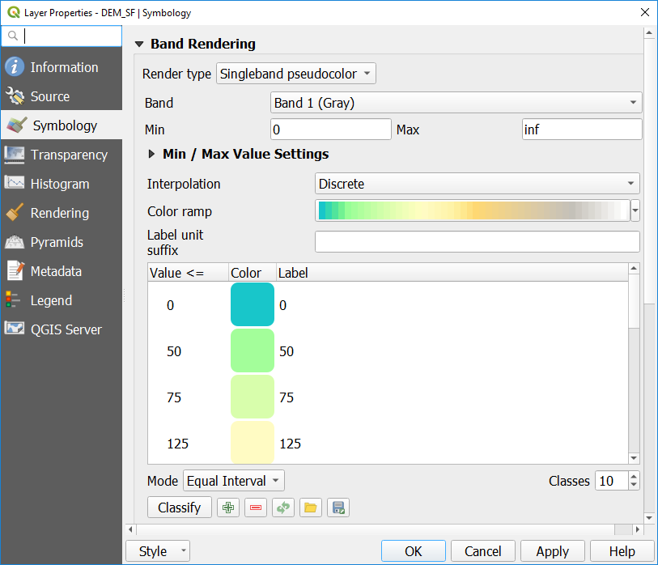
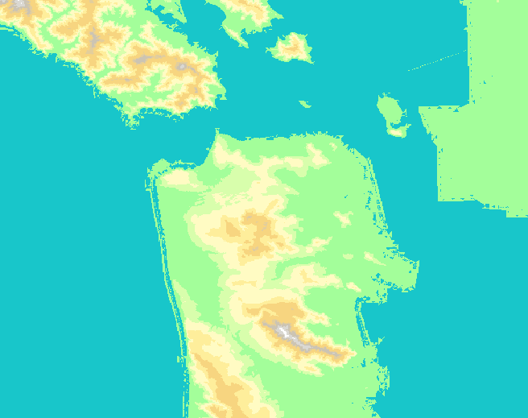

10 Working with Raster Data
Let’s start by looking at some Raster data. We’ll work with a digital elevation model (DEM) for San Francisco. A DEM is a raster in which each cell in the grid contains the elevation at that location.
For now, let’s turn off all of the layers in the Layers panel except for the DEM_SF layer by unchecking the boxes next to the layer names in the Layers Panel on the left side of your screen.
Now you should see a gray scale image that roughly looks like the San Francisco peninsula. This is a Digital Elevation Model (DEM). Each cell in the raster contains a number representing the elevation at that location.
Let’s style this data:
- Open the Layer Styling Panel by clicking on the View menu, then Panels, and checking the box for Layer Styling.
- At the top of the panel that opens, select the DEM from the drop-down menu, or highlight that layer in the Layers panel.
- Click on the Symbology tab on the left side (the icon looks like a paintbrush painting a rainbow).
- For the Render type drop down (just below where you selected the layer), select Singleband pseudocolor.
- Expand the Min/Max Value Settings” area. In the Statistics extent* drop-down, select Whole raster. For Accuracy, select Actual (slower).
- For the Color ramp, select Create new color ramp
- Select Catalog: cpt-city from the drop down and click Ok
- Pick Topography from the options on the left.
- Pick cd-a for our gradient. Or select another scheme you think will work well for representing topography. Click Ok.
- You’ll see that the color ramp in the Layers Properties has updated. Click Apply to see what it looks like with our data or check the box next to Live update to apply changes as you make them.
Chances are, this isn’t exactly what you want and we can make some more improvements to see the shoreline and topography better.
- In the Layer Styling panel again, for the Interpolation drop-down, select Discrete.
- For the Mode, select Equal Interval. For Classes, input 10.
- Change the Value number for the lowest category to 0 by double clicking on the default number and typing in the number 0 and pressing enter on your keyboard. If it doesn’t automatically update, click Apply in the Layer Properties to see how it looks. You should see a more defined coastline that looks more like the docks around the city.
- Continue to adjust the colors and/or breaks until you are happy with how it looks, then click Ok. (See the image below for one option.)
I chose breaks at 0, 50, 75, 125, 175, 225, 275, 325, 350, and inf.
In the event that you need to reset your classes to start over with modifying your classes, click the Classify button again.
Note: In case you need to know, in our DEM data, the Min value is -9.36748 and the Max value is 399.963. You can reset this if you need to by selecting the Min/max radio button in the Min/Max Value Settings again.


Now you’ve had a first look at how to style raster data for better viewer understanding. There is a wide variety of analysis and data processing that we can’t learn today in our limited time. For more on working with raster data, see the Raster Module of the QGIS Training Manual.